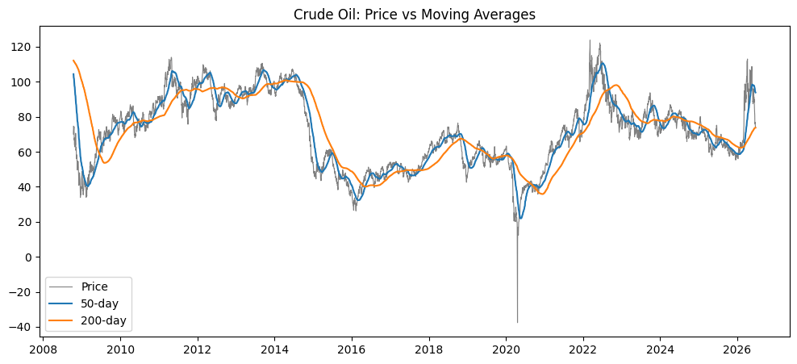

Backtesting a Moving-Average Rule on Crude Oil
Research · About 3 min read
Earlier today I wrote about discovering, through code rather than instinct, that I had been losing money trading gold. The natural next question followed almost immediately. If removing my own judgment from the equation entirely, replacing it with a fixed, mechanical rule, would that actually fix the problem, or just relocate it?
I tested that question on crude oil, the instrument I have actually traded with real positions, rather than picking something unfamiliar for the sake of a clean example.
The rule I tested is a classic one: the golden cross. Using eighteen years of real daily WTI crude futures prices, I calculated a 50-day moving average and a 200-day moving average. The rule is simple and entirely mechanical. Hold the position only when the 50-day average sits above the 200-day average. Sit in cash otherwise. No discretion, no gut calls, nothing left to feel.
My hypothesis was straightforward. A disciplined, rule-based system that systematically avoids the worst stretches should outperform the simplest possible alternative: buying once and holding regardless of what happens next.
It did not. Over the period tested, the mechanical strategy lost approximately 23 percent. Simply buying and holding lost only about 1 percent. The rule did not merely fail to help. It actively performed worse than doing nothing at all.

The reason traces back to a property called lag. A moving average is, by definition, calculated from price that has already happened, which means it always reacts to a move after the fact rather than in anticipation of it. In a market moving cleanly in one direction, that delay barely matters, since the strategy still captures most of the trend even entering a little late. The damage appears in a different kind of market entirely, one that drifts without committing to a direction. Price rises just enough to flip the signal long, then eases back down just enough to flip it back to flat, and the rule ends up trading the noise rather than the trend. That pattern has a name: whipsaw.
Looking at the chart above, this is exactly what happened to crude oil between roughly 2012 and 2014. My first instinct was to call that period chaotic, but the actual data does not support that word. Daily price swings during that stretch were unremarkable by historical standards. What characterized the period was not volatility but direction, or rather, the absence of one. Oil drifted between roughly eighty and one hundred ten dollars a barrel for an extended stretch without committing to a sustained trend in either direction. A sideways market, not a chaotic one, and the distinction matters, because it identifies the actual condition that breaks this style of strategy.
One honest limitation is worth stating plainly. The specific window I tested, fifty days against two hundred, is a single choice among many reasonable ones. A different pairing might tell a different story over the same period. I am deliberately not testing every combination until one looks better, since adjusting parameters after seeing a disappointing result is a well-known way to quietly deceive yourself in this kind of work. The honest version of this study is the one that reports what a single, sensible rule actually did, not the one that was tuned until it agreed with what I wanted to find.
The conclusion I am left with is less satisfying than I expected going in, and more useful for exactly that reason. Removing judgment from a trade does not automatically produce a better outcome. A rule is only as good as its fit to the market it is asked to operate in, and the market is under no obligation to cooperate with whatever rule you happened to choose.